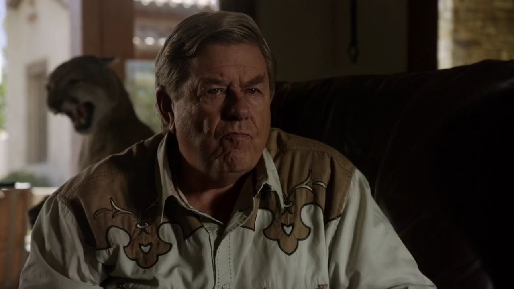
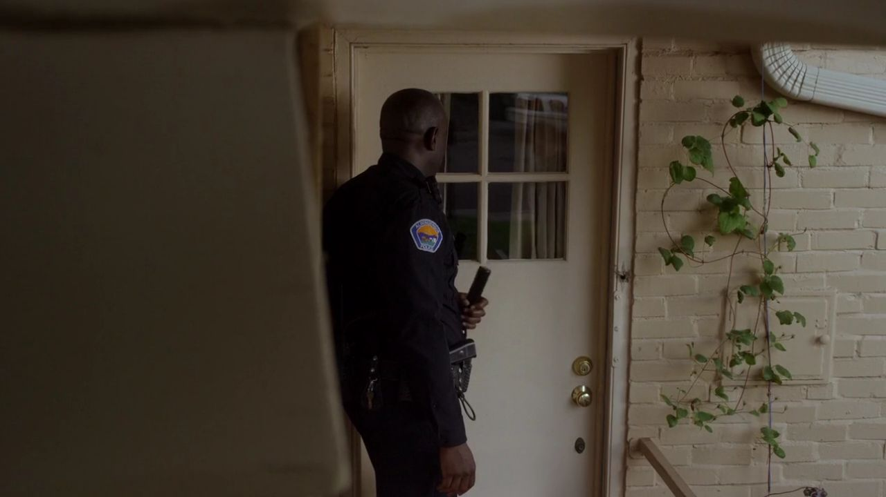
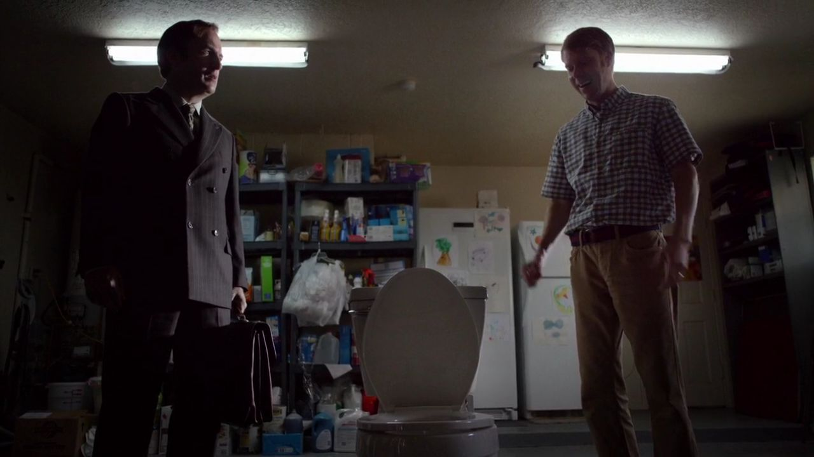
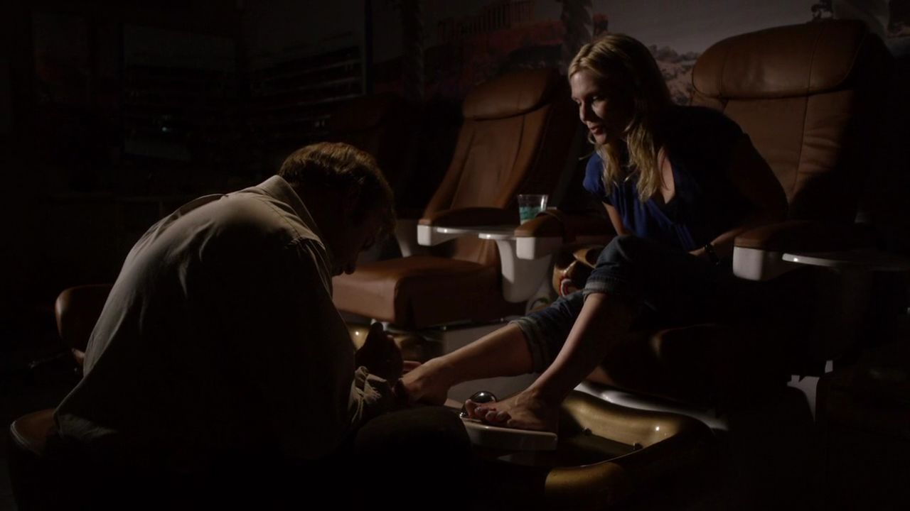
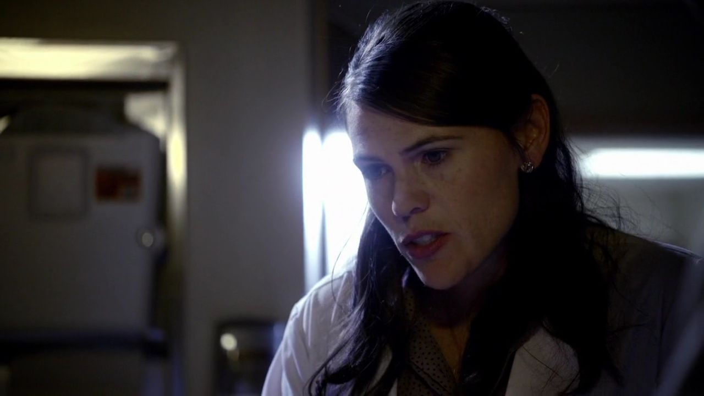
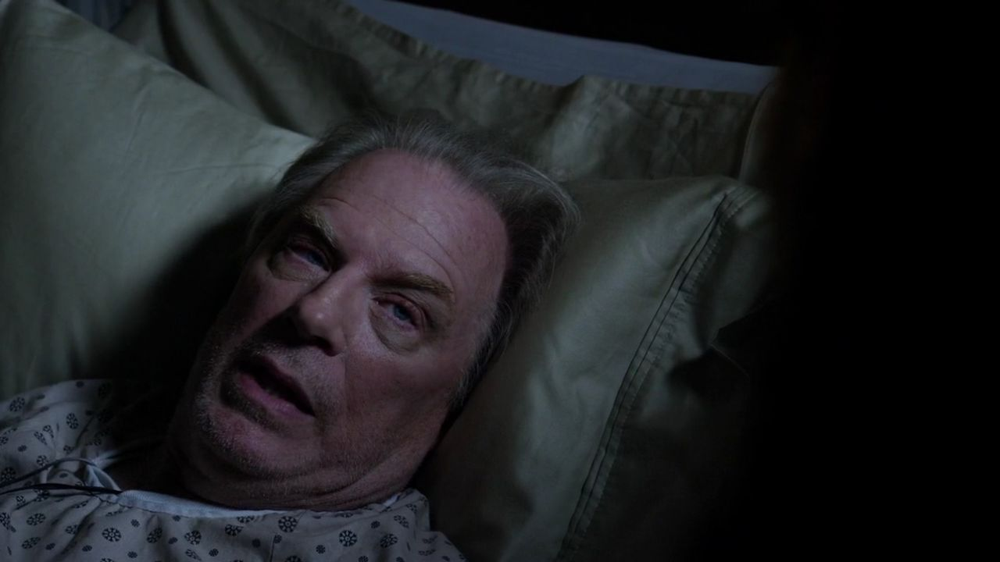
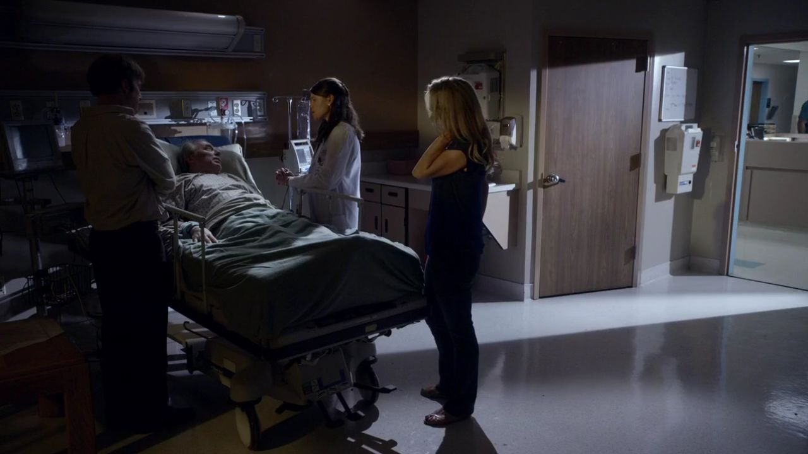
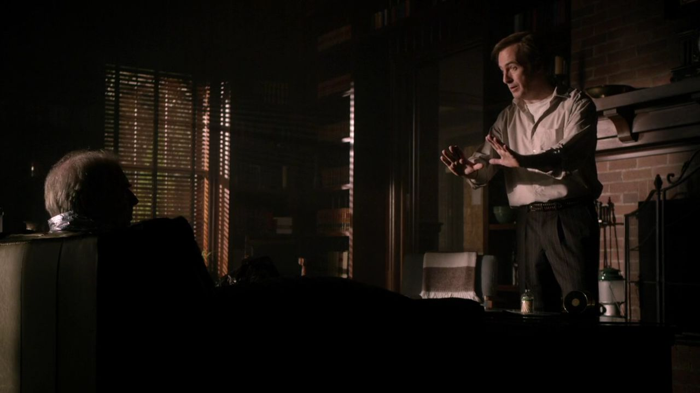
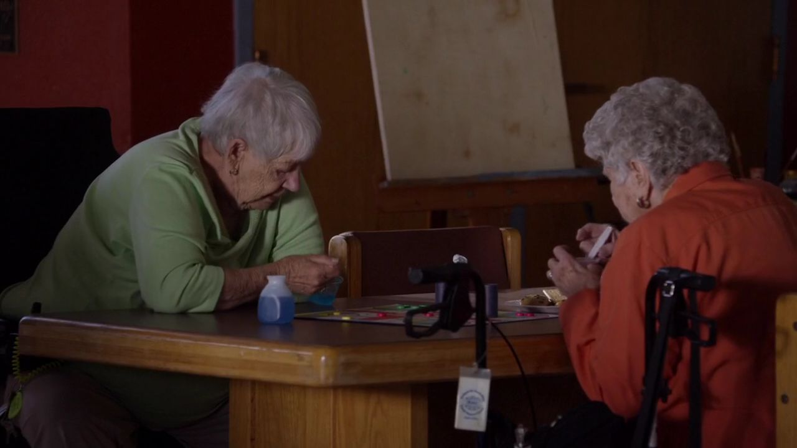
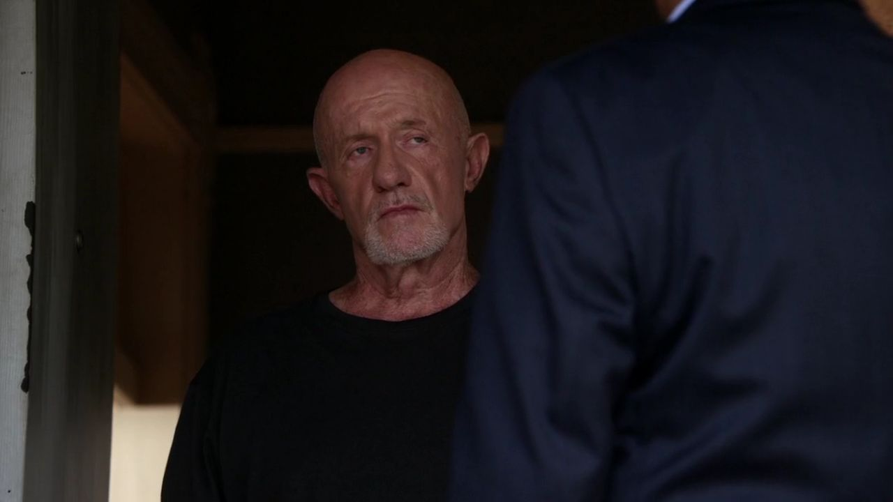

01
郊外住宅 / 一个宏大的委托
最像大客户的那个人，拿不出可用的报酬。

剧情事实赛普斯邀吉米谈宏大的政治法律设想，承诺丰厚报酬，却展示自己印制的货币。吉米发现这并非现实可行的生意。 [1][2]
这一场为什么重要 · 个人解读
新闻带来了辨识度，却没有替他筛选需求。对方认可的是敢公开反抗大机构的形象，继而把自己的幻想投射到他身上。吉米想赚的是真能付账的钱，听到的却是一套无法连接现实的价值系统。
因此 →来电变多，并不保证谋生问题随之解决。

风骚律师 · 第一季第 05 集
广告带来陌生来电，认真倾听带来真正委托。
另一边，哥哥需要的帮助也变得更难判断。
剧透边界 截至 S01E05，含本集结尾
10 个剧情节点 · 7 位人物 · 04 组冲突成为新闻里的英雄之后，吉米终于接到更多电话，却很快发现关注不等于适合自己的业务。一次遗嘱委托让他接触到另一种工作节奏：耐心听完小物件背后的人情。与此同时，查克住院，使照顾、尊重和现实判断撞在一起。一个人怎样被认真对待，成了两条线共同的问题。
读这一集，跟住三件事关注如何变成委托 / 照顾与尊重 / 谁能定义帮助

三幕梳理本集。每一场都区分剧情事实与个人解读，把行动、动机和后果连起来。
热闹之后，辨认什么是真正的委托。

剧情事实赛普斯邀吉米谈宏大的政治法律设想，承诺丰厚报酬，却展示自己印制的货币。吉米发现这并非现实可行的生意。 [1][2]
新闻带来了辨识度，却没有替他筛选需求。对方认可的是敢公开反抗大机构的形象，继而把自己的幻想投射到他身上。吉米想赚的是真能付账的钱，听到的却是一套无法连接现实的价值系统。
因此 →来电变多，并不保证谋生问题随之解决。

剧情事实发明者向吉米展示语音马桶，希望处理专利相关事务。装置说出的内容与家庭用途形成尴尬反差，吉米没有得到理想业务。 [1][2]
这段喜剧并不只是嘲笑奇怪客户。它让观众看见，英雄广告吸引来的注意与吉米真正能开展的工作并不匹配。他越努力显得无所不能，越可能被任何想法找上门；职业方向需要比声量更具体的选择。
因此 →下一份委托安静得多，却终于能正常完成。

剧情事实施特劳斯太太请吉米拟遗嘱，逐一说明瓷偶与亲友的安排。她重视其中的阿尔卑斯牧童瓷偶，并信任他的耐心，直接付清费用。 [1][2]
看似琐碎的物品分配，实则是她怎样记住亲友、怎样安排自己离开之后的关系。吉米没有用宏大案件的尺度嘲笑它，而是愿意一件件听。这份适应人的能力，不需要制造危机也能成为职业价值。
因此 →他真正得到的认可，来自愿意把小事认真做完。
关注有了，职业价值仍要由具体服务建立。
面对哥哥，不只需要一句相信。

剧情事实金听到吉米与老年客户相处的情况，建议他考虑老年法律业务。两人随后得知查克被送进医院。 [1][2]
她的建议依据一次实际完成的工作，没有要求他再借别人的西装证明自己。方向来自能力与具体需求的相遇。医院电话立刻打断这种可能的轻松，也让“照顾老人”之外，另一个需要帮助的人回到生活中央。
因此 →怎样帮助哥哥，变成眼下更难的问题。

剧情事实医生询问查克的避电经历和症状。吉米与金在旁听取意见，查克坚持自己的痛苦与电磁暴露相关。 [1][2]
病房没有把照顾简化成一句相信或不相信。一个人确实受苦，与他对原因的判断完全准确，是两个问题。吉米熟悉哥哥的生活，却没有因此自动拥有全部解释；认真对待痛苦，也需要允许外部观察进入。
因此 →医生安排的一次小测试，显出主观感受与环境之间的缝隙。

剧情事实医生在查克未察觉时开启病床的电动控制部分，查克没有出现与其预期相同的即时反应。医生据此提出进一步治疗意见。 [1][2]
这个画面可以说明他的解释受到挑战，不能被缩写成“病都是装的”。病床测试并未取消他此前的疼痛，也没有替所有相似症状给出结论。戏剧真正逼问家人的，是如何把尊重与继续求助放到一起。
因此 →是否让查克接受进一步照护，成为现实选择。

剧情事实霍华德来到医院。吉米一度用可能让查克接受强制照护、影响合伙安排的说法试探他，随后向金说明自己是在吓唬霍华德。 [1][2]
讨论本来围绕查克的健康，吉米却又把律所权益拉进来。霍华德的反应也让职业利益进入照顾现场。这里不能把任何一句“我是为他好”当成动机已经透明的证明；更不能把吉米说来刺激对方的话，写成已经执行的决定。
因此 →吉米最后带哥哥回家，没有用威胁换取权益。
医嘱、选择和合伙关系，使帮助变得复杂。
在可以实际完成的工作中重来。

剧情事实吉米带查克回家后，发现哥哥已经知道广告牌救援。面对怀疑，吉米表示今后会按规则做事。 [1][2]
查克需要的不是新的英雄标题，而是对手段的说明。吉米希望照顾和重新工作能表明改变，却无法要求哥哥立刻消除疑虑。两人的关系仍被一种熟悉的错位拉扯：弟弟在提供生活支持，哥哥仍掌握对职业正当性的评价。
因此 →这句承诺需要接下来的具体工作来支撑。

剧情事实吉米采用老年观众熟悉的律师形象，在养老机构接触潜在客户，并把宣传放在果冻盖等日常物件上，开始明确推广老年法律业务。 [1][2]
他仍会包装，也仍需要让别人记住名字；区别在于，这次形象后面有刚刚展示过的耐心与工作。使用表演能力不必然等于骗人，关键是宣传是否接上能够实际提供的服务。台词里好记的押韵，终于对应一种清晰需求。
因此 →职业方向开始具体，迈克的生活却出现了新的来客。

剧情事实迈克在一处住宅外看着一名女子出门。后来，有警察来到他家，其中有人与他的费城经历有关。 [1][2]
本集先给出目光和陌生来客，不立刻解释全部关系。与吉米到处自我介绍相反，迈克的故事靠沉默和旧人进入。不要因为后面一集会揭晓往事，就把这名女子、伤口与案件的完整解释提前说完。
因此 →下一段叙事将把镜头交给这个守着栏杆的人。
新方向出现，旧生活仍未卸下全部重量。
切换故事阶段，再点击角色，查看本集行动、个人诉求与关系变化。
宣传带来来电，真正可完成的服务在施特劳斯太太家出现。
关系图只归纳本集已展示的行动与联系，不将后续动机提前写入。 人物照统一登记并跨集复用；阶段说明含个人解读，连线不表示每个人已知道全部信息。
三次会面展示不同的客户需要；这是剧情中的职业方向选择，非现实法律服务指南。
个人解读两位客户都认为自己的事情很重要。区别在于，吉米能否理解需求并提供实际服务。真正的职业转机从愿意耐心听完开始，比被新闻夸奖更慢，也更可能持续。
四组冲突深读 · 以下为个人解读，事实边界随卡片标注。
广告把吉米塑造成敢向强者叫板的人，于是奇怪愿望也带着期待找来。对方未必想骗他，却可能只想雇一个能够替幻想赋予合法外观的角色。声名与工作能力并不总对准同一种需要。
施特劳斯太太的遗嘱提供了另一种认可：不必先成为什么传奇人物，只要愿意听完她如何记住亲友。对她重要的东西被认真处理，律师的价值就已经发生。
阅读判断：业务规模不决定一个人的生活需求是否值得认真处理。
英文短句核对非官方对白转录；中文为本页自译，潜台词属于个人解读。
Guy needed help, that's all.那个人需要帮忙，仅此而已。中文自译
他谈起广告牌救援，用一句简短理由淡化复杂来路。
同一句朴素的善意也能成为修饰形象的说法，读者需要记得上一集已经看见的前因。
本页选用短句共 15 个英文词。配图呈现相应人物与场景，不逐句指认发声瞬间。核对对白来源 ↗
只在截至本集的情节中阅读；以下均为个人解读。


吉米找到可以发挥耐心与亲和力的地方。
迈克仍坐在自己的沉默里，
但过去已经来到家门口。
已经知道 · 剧情事实查克回家，吉米开始推广老年法律业务；警察登门找迈克。
还不能预先回答迈克的完整家事与警方来意，本集尚未说清；吉米的新方向能否持续也仍待行动。
剧透截至第一季第5集，包含本集结尾。不涉及后续集数或《绝命毒师》的具体揭示。 不用后续的结果，替此刻的人物决定动机。